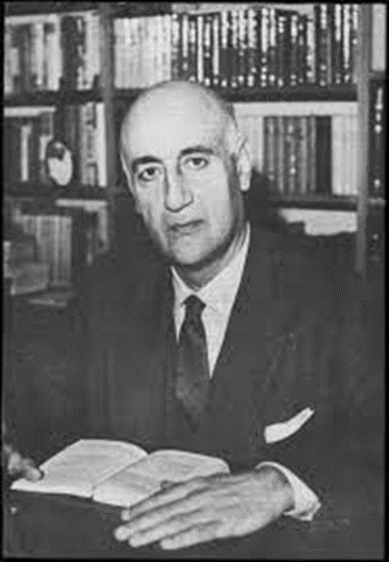

Βιογραφία

Βίος
Ο Γιώργος Θεοτοκάς γεννήθηκε στην Κωνσταντινούπολη στις 27 Αυγούστου το 1905. Φοίτησε στη Σχολή Ζαμαρία την περίοδο 1911-1913 και κατόπιν στο Εθνικόν Ελληνογαλλικόν Λύκειον, όπου και παρέμεινε μέχρι το 1922. Μετά τη Μικρασιατική καταστροφή το 1922, η οικογένεια Θεοτοκά εγκαταστάθηκε στην Αθήνα.Στην πρωτεύουσα ο Θεοτοκάς φοίτησε στη Νομική Σχολή του Πανεπιστημίου Αθηνών, εγγραφόμενος σε αυτήν το 1922 από την οποία αποφοίτησε στις 26 Νοεμβρίου 1926.Τον Ιανουάριο του 1927 αναχώρησε για το Παρίσι με σκοπό την πραγματοποίηση ελεύθερων σπουδών πάνω στην νομική, στην ιστορία και φιλοσοφία. To 1928 μετακομίζει από το Παρίσι στο Λονδίνο όπου μελετά το αγγλικό δίκαιο, την αγγλική φιλολογία και παρακολουθεί μαθήματα ιστορίας και πολιτισμού.Επέστρεψε λίγο αργότερα, το φθινόπωρο του 1929, στην Αθήνα και εργάστηκε ως δικηγόρος.Παράλληλα, δραστηριοποιήθηκε έντονα στον πνευματικό χώρο.Το 1929 εξέδωσε το δοκίμιό του Ελεύθερο πνεύμα, που εκ των υστέρων χαρακτηρίστηκε "μανιφέστο" της Γενιάς του '30 και συνεργαζόταν με λογοτεχνικά περιοδικά, ενώ το 1933 κυκλοφόρησε το πρώτο λογοτεχνικό του έργο, το πρώτο μέρος του μυθιστορήματος Αργώ.
Η Ακαδημία Αθηνών τον βράβευσε με το «βραβείο πεζογραφίας» το 1939 για το μυθιστόρημά του Το δαιμόνιο. Το έργο του διακόπηκε όμως προσωρινά λόγω του ελληνοϊταλικού πολέμου του 1940.Στις 22 Νοεμβρίου 1940 παρουσιάζεται εθελοντής στο Γουδί αλλά του αρνούνται την κατάταξη.Στις 3 Δεκεμβρίου του 1940 κατατάχθηκε στο Έμπεδο και στις 17 Ιανουαρίου 1941 αποστρατεύεται. Τον Φεβρουάριο του 1941 κατατάσσεται εκ νέου στον 12ο λόχο του ΓΕΑ, όπου θα εκπαιδευόταν στους όλμους.Τον Οκτώβριο του 1944 συναντά τον Γεώργιο Παπανδρέου ο οποίος του ζητάει να αναλάβει όποια δημόσια θέση επιθυμούσε,αλλά τελικά αρνήθηκε.Στις 10 Μαΐου 1948 παντρεύεται τη βυζαντινολόγο Ναυσικά Στεργίου στη Θεσσαλονίκη. Διετέλεσε διευθυντής του Εθνικού Θεάτρου τις περιόδους:16/02/1945 ως 10/05/1946 και 1952-1953. Ο Γεώργιος Θεοτοκάς ασχολήθηκε και με την πολιτική,υπήρξε υποψήφιος βουλευτής του Νομού Χίου το 1956, αλλά απέτυχε να εξασφαλίσει την εκλογή του. Στις εκλογές του Μαΐου 1958 προσέφερε αυτήν τη φορά τη δημόσια υποστήριξή του στο Κόμμα των Φιλελευθέρων, χωρίς να θέσει εκ νέου υποψηφιότητα.
Από τον Αύγουστο του 1952 έως τις αρχές Φεβρουαρίου 1953 ταξιδεύει στις ΗΠΑ. Αφορμή του ταξιδιού του ήταν πρόσκληση του Στέιτ Ντιπάρτμεντ, το οποίο μέσω του προγράμματος μορφωτικών ανταλλαγών Smith-Mundt, στόχευε στη βελτίωση της εικόνας των ΗΠΑ μέσα στο πλαίσιο του Ψυχρού Πολέμου. Η επιλογή του είχε να κάνει και με την ιδιότητά του ως διευθυντή του Εθνικού Θεάτρου.Το 1960 επισκέπτεται την Αίγυπτο, το Όρος Σινά και το Άγιο Όρος. Το 1961 ταξίδεψε στον Λίβανο και τη Συρία, το 1962 τη Ρουμανία, τη Σοβιετική Ένωση και την Περσία. Τον Δεκέμβριο του 1962 επισκέπτεται την ΕΣΣΔ ως μέλος μιας ομάδας ελλήνων διανοουμένων, οι οποίοι είχαν προσκληθεί στο πλαίσιο της ψυχροπολεμικής προπαγάνδας.Επισκέφθηκε την Οδησσό, τη Μόσχα και το Λένινγκραντ.Τον Σεπτέμβριο του 1963 συμμετείχε μαζί με τον Ευάγγελο Παπανούτσο στην Υποεπιτροπή Παιδείας της Ενώσεως Κέντρου, η οποία συνέταξε ένα πλήρες σχέδιο για το εκπαιδευτικό σύστημα σε περίπτωση που η Ένωση Κέντρου ανελάμβανε την εξουσία.Το 1964 διορίστηκε πρόεδρος του Δ.Σ. του Κρατικού Θεάτρου Βορείου Ελλάδος.Το 1965 επισκέπτεται τη Βουλγαρία Η σύζυγός του Ναυσικά Στεργίου πέθανε τον Ιούλιο του 1959 μετά από νόσο που της είχε διαγνωσθεί από τα τέλη του 1956.Το 1966 ξαναπαντρεύτηκε, αυτή τη φορά την Κοραλία Ανδρειάδη. Πέθανε στις 30 Οκτωβρίου του 1966 στην Αθήνα, σε ηλικία 61 χρόνων, από καρκίνο στο ήπαρ, ο οποίος δεν είχε διαγνωσθεί έγκαιρα.
Η “ζωή” του στον Τύπο
Από τα μαθητικά κιόλας χρόνια εκδηλώνει το πνευματικό στίγμα του ο Θεοτοκάς. Έτσι μαθητής έδωσε διαλέξεις σχετικά με την ιστορία του δημοτικισμού και το έργο του Διονύσιου Σολωμού, αποτελώντας τον προάγγελο των αγώνων του για τον δημοτικισμό. Στα φοιτητικά του χρόνια μέλος της Φοιτητικής Συντροφιάς δημοσιεύει με ευκαιρία την επίσκεψη στην Ελλάδα και την ιδιαίτερη πατρίδα του τη Χίο του Γιάννη Ψυχάρη (27-29 Αυγούστου 1925) άρθρο στην εφημερίδα Νέα Χίος με τίτλο Η κοινωνική σημασία του έργου του Ψυχάρη. Υπό το ίδιο περιεχόμενο δίνει διάλεξη και προσφωνεί τον Ψυχάρη σε τιμητική εκδήλωση προς τιμήν του στην αίθουσα της Εταιρείας Κοινωνικών Επιστημών στις 20 Νοεμβρίου 1925.Παράλληλα αρθρογραφεί στην ομώνυμη εφημερίδα της Φοιτητικής Συντροφιάς με θέματα από το γλωσσικό ζήτημα και τη λογοτεχνία, έως το οικογενειακό δίκαιο.Αργότερα στο Παρίσι αρθρογραφεί από τις στήλες της εφημερίδας Αγών των αδελφών Καστανάκη. Την περίοδο αυτή διαμορφώνονται οι ιδέες που θα αποτυπώσει στο Ελεύθερο Πνεύμα, το οποίο αρχίζει να επεξεργάζεται στον επόμενο σταθμό των σπουδών του το Λονδίνο.To 1931 αρχίζει τη συνεργασία του με τα περιοδικά Νέα Εστία και Κύκλος. Επίσης από το 1929 έως το 1931 αρθρογραφεί στις εφημερίδες Πρωία και Εργασία. Λίγο πιο πριν αποπειράθηκε να εκδώσει το περιοδικό Οδυσσέας μαζί με τους Ν. Καλαμάτη, Κ. Θ. Δημαρά και Ηλ. Τσιριμώκο, αλλά απέτυχαν.Τον Ιανουάριο του 1932 εκδίδει το πολιτικό του πιστεύω, Εμπρός στο κοινωνικό πρόβλημα.[31] Από τον Ιανουάριο του 1933 έως τον Μάιο του 1934 αρθρογραφεί στο περιοδικό Ιδέα.Από το 1930 έως το 1935 αρθρογραφεί στο περιοδικό Νέα Γράμματα. Το 1931 εκδίδει το Ώρες αργίας και το 1933 το Αργώ.Μετά την εγκαθίδρυση της μεταξικής δικτατορίας διέκοψε τη συνεργασία του με τα Νέα Γράμματα και άρχισε να συνεργάζεται με το περιοδικό Νεοελληνικά Γράμματα.Στη διάρκεια της δεκαετίας του 1940 στρέφεται στο θέατρο: Αντάρα στ' Ανάπλι (1942), Το γεφύρι της Άρτας (1942), Πέφτει το βράδυ (γραμμένο το 1941 και δημοσιευμένο το 1943). Το κάστρο της Ωριάς (1944) και το 1947 Το παιχνίδι της τρέλας και της φρονιμάδας.Το 1945 προτάθηκε για το Νόμπελ Λογοτεχνίας από το μέλος της Σουηδικής Ακαδημίας Sigfrid Siwertz.
Copyright © 2023. All rights reserved.
This site has built for exercise purposes, fully experimentally
This site has built for exercise purposes, fully experimentally